소방설비기사(전기분야) (2021-03-07 기출문제)
1과목: 소방원론
1. 건축법령상 내력벽, 기둥, 바닥, 보, 지붕틀 및 주계단을 무엇이라 하는가?
- 내진구조부
- 건축설비부
- 보조구조부
- 주요구조부
(정답률: 89%)

2. 이산화탄소의 물성으로 옳은 것은?
- 임계온도 : 31.35℃, 증기비중 : 0.529
- 임계온도 : 31.35℃, 증기비중 : 1.529
- 임계온도 : 0.35℃, 증기비중 : 1.529
- 임계온도 : 0.35℃, 증기비중 : 0.529
(정답률: 85%)
3. 소화약제로 사용하는 물의 증발잠열로 기대할 수 있는 소화효과는?
- 냉각소화
- 질식소화
- 제거소화
- 촉매소화
(정답률: 89%)
4. 블레비(BLEVE) 현상과 관계가 없는 것은?
- 핵분열
- 가연성액체
- 화구(Fire ball)의 형성
- 복사열의 대량 방출
(정답률: 82%)
5. 할로겐화합물 소화약제에 관한 설명으로 옳지 않은 것은?
- 연쇄반응을 차단하여 소화한다
- 할로겐족 원소가 사용된다
- 전기에 도체이므로 전기화재에 효과가 있다.
- 소화약제의 변질분해 위험성이 낮다.
(정답률: 75%)
6. 스테판-볼쯔만의 법칙에 의해 복사열과 절대온도와의 관계를 옳게 설명한 것은?
- 복사열은 절대온도의 제곱에 비례한다.
- 복사열은 절대온도의 4제곱에 비례한다.
- 복사열은 절대온도의 제곱에 반비례한다.
- 복사열은 절대온도의 4제곱에 반비례한다.
(정답률: 82%)
7. 분자식이 CF2BrCl 인 할로겐화합물 소화약제는?
- Halon 1301
- Halon 1211
- Halon 2402
- Halon 2021
(정답률: 83%)
8. 대두유가 침적된 기름 걸레를 쓰레기통에 장시간 방치한 결과 자연발화에 의하여 화재가 발생한 경우 그 이유로 옳은 것은?
- 융해열 축적
- 산화열 축적
- 증발열 축적
- 발효열 축적
(정답률: 84%)
9. 조연성 가스에 해당하는 것은?
- 일산화탄소
- 산소
- 수소
- 부탄
(정답률: 86%)
10. 물에 저장하는 것이 안전한 물질은?
- 나트륨
- 수소화칼슘
- 이황화탄소
- 탄화칼슘
(정답률: 76%)
11. 다음 각 물질과 물이 반응하였을 때 발생하는 가스의 연결이 틀린 것은?
- 탄화칼슘 - 아세틸렌
- 탄화알루미늄 - 이산화황
- 인화칼슘 - 포스핀
- 수소화리튬 - 수소
(정답률: 72%)
12. 건축물의 화재 시 피난자들의 집중으로 패닉(Panic) 현상이 일어날 수 있는 피난방향은?
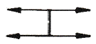
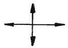
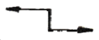
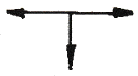
(정답률: 87%)
13. 위험물별 저장방법에 대한 설명 중 틀린 것은?
- 유황은 정전기가 축적되지 않도록 하여 저장한다
- 적린은 화기로부터 격리하여 저장한다
- 마그네슘은 건조하면 부유하여 분진폭발의 위험이 있으므로 물에 적시어 보관한다
- 황화린은 산화제와 격리하여 저장한다
(정답률: 85%)
14. 전기화재의 원인으로 거리가 먼 것은?
- 단락
- 과전류
- 누전
- 절연 과다
(정답률: 82%)
15. 인화점이 낮은 것부터 높은 순서로 옳게 나열된 것은?
- 에틸알코올 < 이황화탄소 < 아세톤
- 이황화탄소 < 에틸알코올 < 아세톤
- 에틸알코올 < 아세톤 < 이황화탄소
- 이황화탄소 < 아세톤 < 에틸알코올
(정답률: 66%)
16. 가연성 가스이면서도 독성 가스인 것은?
- 질소
- 수소
- 염소
- 황화수소
(정답률: 78%)
17. 1기압상태에서, 100℃ 물 1g이 모두 기체로 변할 때 필요한 열량은 몇 cal 인가?
- 429
- 499
- 539
- 639
(정답률: 84%)
18. 다음 물질 중 연소범위를 통해 산출한 위험도 값이 가장 높은 것은?
- 수소
- 에틸렌
- 메탄
- 이황화탄소
(정답률: 65%)
19. 일반적으로 공기 중 산소농도를 몇 vol% 이하로 감소시키면 연소속도의 감소 및 질식 소화가 가능한가?
- 15
- 21
- 25
- 31
(정답률: 84%)
20. 가연물질의 구비조건으로 옳지 않은 것은?
- 화학적 활성이 클 것
- 열의 축적이 용이할 것
- 활성화 에너지가 작을 것
- 산소와 결합할 때 발열량이 작을 것
(정답률: 68%)
2과목: 소방전기회로
21. 논리식
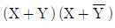
을 간단히 하면?- 1
- XY
- X
- Y
(정답률: 73%)
22. 어떤 측정계기의 지시값을 M, 참값을 T라 할 때 보정률(%)은?
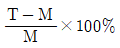
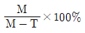
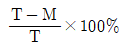
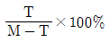
(정답률: 73%)
23. 그림과 같이 반지름 r(m)인 원의 원주상 임의의 2점 a, b 사이에 전류 I(A)가 흐른다. 원의 중심에서의 자계의 세기는 몇 A/m인가??
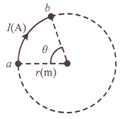
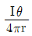
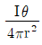
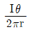
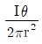
(정답률: 41%)
24. 회로에서 a, b 간의 합성저항(Ω)은? (단, R1=3Ω, R2=9Ω이다.)
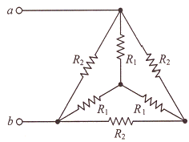
- 3
- 4
- 5
- 6
(정답률: 56%)
25. 2차 제어시스템에서 무제동으로 무한 진동이 일어나는 감쇠율(damping ratio) δ는?
- δ = 0
- δ > 1
- δ = 1
- 0 < δ < 1
(정답률: 70%)
26. 블록선도의 전달함수 (C(s)/R(s))는?
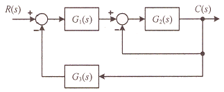
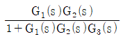
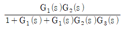
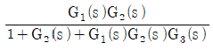
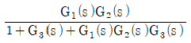
(정답률: 62%)
27. 3상 유도전동기의 특성에서 토크, 2차 입력, 동기속도의 관계로 옳은 것은?
- 토크는 2차 입력과 동기속도에 비례한다
- 토크는 2차 입력에 비례하고 동기속도에 반비례한다
- 토크는 2차 입력에 반비례하고 동기속도에 비례한다
- 토크는 2차 입력의 제곱에 비례하고 동기속도의 제곱에 반비례한다
(정답률: 57%)
28. 어떤 회로에 v(t)=150sinωt(V)의 전압을 가하니 i(t)=12sin(ωt-30°)(A)의 전류가 흘렀다. 이 회로의 소비전력(유효전력)은 약 몇 W 인가?
- 390
- 450
- 780
- 900
(정답률: 48%)
29. 평행한 두 도선 사이의 거리가 r이고, 각 도선에 흐르는 전류에 의해 두 도선 간의 작용력이 F1일 때, 두 도선 사이의 거리를 2r로 하면 두 도선 간의 작용력 F2 는?
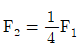
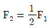
- F2=2F1
- F2=4F1
(정답률: 56%)
30. 200V의 교류전압에서 30A의 전류가 흐르는 부하가 4.8KW의 유효전력을 소비하고 있을 때 이 부하의 리액턴스(Ω)는?
- 6.6
- 5.3
- 4.0
- 3.3
(정답률: 40%)
31. 정전용량이 0.02㎌인 커패시터 2개와 정전용량이 0.01㎌인 커패시터 1개를 모두 병렬로 접속하여 24V의 전압을 가하였다. 이 병렬회로의 합성 정전용량(㎌)과 0.01㎌의 커패시터에 축적되는 전하량(C)은?
- 0.⑤, 0.12×10-6
- 0.⑤, 0.24×10-6
- 0.03, 0.12×10-6
- 0.03, 0.24×10-6
(정답률: 70%)
32. 그림과 같은 다이오드 회로에서 출력전압 Vo는? (단, 다이오드의 전압강하는 무시한다.)
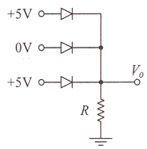
- 10V
- 5V
- 1V
- 0V
(정답률: 75%)
33. 데브난의 정리를 이용하여 그림(a)의 회로를 그림 (b)와 같은 등가회로로 만들고자 할 때 Vth(V)와 Rth(Ω)은?
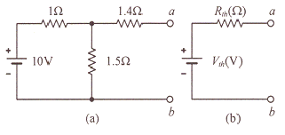
- 5V, 2Ω
- 5V, 3Ω
- 6V, 2Ω
- 6V, 3Ω
(정답률: 44%)
34. LC 직렬회로에 직류전압 E를 t=0(s)에 인가했을 때 흐르는 전류 I(t)는?
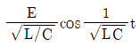
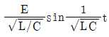
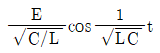
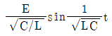
(정답률: 64%)
35. 다음 소자 중에서 온도 보상용으로 쓰이는 것은?
- 서미스터
- 바리스터
- 제너다이오드
- 터널다이오드
(정답률: 82%)
36. 변위를 압력으로 변환하는 장치로 옳은 것은?
- 다이어프램
- 가변 저항기
- 벨로우즈
- 노즐 플래퍼
(정답률: 60%)
37. 저항 R1(Ω), 저항 R2(Ω), 인덕턴스 L(H)의 직렬회로가 있다. 이 회로의 시정수(s)는?
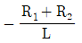
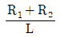
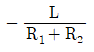
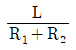
(정답률: 64%)
38. 자기 인덕턴스 L1, L2가 각각 4mH, 9mH인 두 코일이 이상적인 결합이 되었다면 상호 인덕턴스는 몇 mH인가? (단, 결합계수는 1이다.)
- 6
- 12
- 24
- 36
(정답률: 61%)
39. 분류기를 사용하여 내부저항이 RA인 전류계의 배율을 9로 하기 위한 분류기의 저항 RS(Ω)은?
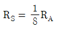
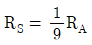
- RS=8RA
- RS=9RA
(정답률: 67%)
40. 그림의 논리회로와 등가인 논리 게이트는?
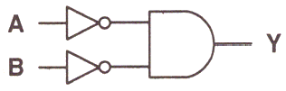
- NOR
- NAND
- NOT
- OR
(정답률: 55%)
3과목: 소방관계법규
41. 소방기본법령상 저수조의 설치기준으로 틀린 것은?
- 지면으로부터의 낙차가 4.5m 이상일 것
- 흡수부분의 수심이 0.5m 이상일 것
- 흡수에 지장이 없도록 토사 및 쓰레기 등을 제거할 수 있는 설비를 갖출 것
- 흡수관의 투입구가 사각형의 경우에는 한변의 길이가 60cm 이상, 원형의 경우에는 지름이 60cm 이상일 것
(정답률: 65%)
42. 소방시설공사업법령상 소방시설업 등록을 하지 아니하고 영업을 한 자에 대한 벌칙은?
- 500만원 이하의 벌금
- 1년 이하의 징역 또는 1000만원 이하의 벌금
- 3년 이하의 징역 또는 3000만원 이하의 벌금
- 5년 이하의 징역
(정답률: 63%)
43. 화재예방, 소방시설 설치/유지 및 안전관리에 관한 법령상 대통령령 또는 화재안전기준이 변경되어 그 기준이 강화되는 경우 기존 특정소방대상물의 소방시설 중 강화된 기준을 적용하여야 하는 소방시설은?
- 비상경보설비
- 비상방송설비
- 비상콘센트설비
- 옥내소화전설비
(정답률: 68%)
44. 소방기본법령상 화재조사의 종류 중 화재원인조사에 해당하지 않는 것은?
- 발화원인 조사
- 인명피해 조사
- 연소상황 조사
- 소방시설 등 조사
(정답률: 77%)
45. 소방기본법령상 소방신호의 방법으로 틀린 것은?
- 타종에 의한 훈련신호는 연 3타 반복
- 싸이렌에 의한 발화신호는 5초 간격을 두고, 10초씩 3회
- 타종에 의한 해제신호는 상당한 간격을 두고 1타씩 반복
- 싸이렌에 의한 경계신호는 5초 간격을 두고, 30초씩 3회
(정답률: 53%)
46. 화재예방, 소방시설 설치/유지 및 안전관리에 관한 법령상 특정소방대상물의 관계인이 수행하여야 하는 소방안전관리 업무가 아닌 것은?
- 소방훈련의 지도/감독
- 화기(火氣) 취급의 감독
- 피난시설, 방화구획 및 방화시설의 유지/관리
- 소방시설이나 그 밖의 소방 관련시설의 유지/관리
(정답률: 70%)
47. 소방기본법에서 정의하는 소방대의 조직구성원이 아닌 것은?
- 의무소방원
- 소방공무원
- 의용소방대원
- 공항소방대원
(정답률: 79%)
48. 위험물안전관리법령상 인화성액체위험물(이황화탄소를 제외)의 옥외탱크저장소의 탱크주위에 설치하여야 하는 방유제의 기준 중 틀린 것은?
- 방유제의 용량은 방유제안에 설치된 탱크가 하나인 때에는 그 탱크 용량의 110% 이상으로 할 것
- 방유제의 용량은 방유제안에 설치된 탱크가 2기 이상인 때에는 그 탱크중 용량이 최대인 것의 용량의 110% 이상으로 할 것
- 방유제는 높이 1m 이상 2m 이하, 두께0.2m 이상, 지하매설 깊이 0.5m 이상으로 할것
- 방유제내의 면적은 80000m2 이하로 할 것
(정답률: 65%)
49. 위험물안전관리법상 시ㆍ도지사의 허가를 받지 아니하고 당해 제조소등을 설치 할 수 있는 기준 중 다음 ( )안에 알맞은 것은?
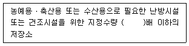
- 20
- 30
- 40
- 50
(정답률: 73%)
50. 화재예방, 소방시설 설치ㆍ유지 및 안전관리에 관한 법령상 건축허가등의 동의대상물의 범위기준 중 틀린 것은?
- 건축등을 하려는 학교시설 : 연면적 200m2이상
- 노유자시설 : 연면적 200m2이상
- 정신의료기관(입원실이 없는 정신건강의학과 의원은 제외) : 연면적 300m2이상
- 장애인 의료재활시설 : 연면적 300m2이상
(정답률: 52%)
51. 화재예방, 소방시설 설치/유지 및 안전관리에 관한 법령상 지하가는 연면적이 최소 몇m2이상이어야 스프링클러설비를 설치하여야 하는 특정소방대상물에 해당하는가? (단, 터널은 제외한다.)
- 100
- 200
- 1000
- 2000
(정답률: 68%)
52. 화재예방, 소방시설 설치ㆍ유지 및 안전관리에 관한 법령상 소방안전관리대상물의 소방계획서에 포함되어야 하는 사항이 아닌 것은?
- 소방시설ㆍ피난시설 및 방화시설의 점검ㆍ정비계획
- 위험물안전관리법에 따라 예방규정을 정하는 제조소등의 위험물 저장ㆍ취급에 관한사항
- 특정소방대상물의 근무자 및 거주자의 자위소방대 조직과 대원의 임무에 관한 사항
- 방화구획, 제연구획, 건축물의 내부마감재료(불연재료ㆍ준불연재료 또는 난연재료로 사용된 것) 및 방염물품의 사용현황과 그밖의 방화구조 및 설비의 유지ㆍ관리계획
(정답률: 53%)
53. 위험물안전관리법상 업무상 과실로 제조소등에서 위험물을 유출ㆍ방출 또는 확산시켜 사람의 생명ㆍ신체 또는 재산에 대하여 위험을 발생시킨 자에 대한 벌칙기준은?
- 5년 이하의 금고 또는 2000만원 이하의 벌금
- 5년 이하의 금고 또는 7000만원 이하의 벌금
- 7년 이하의 금고 또는 2000만원 이하의 벌금
- 7년 이하의 금고 또는 7000만원 이하의 벌금
(정답률: 77%)
54. 소방기본법령상 소방용수시설의 설치기준 중 급수탑의 급수배관의 구경은 최소 몇mm 이상이어야 하는가?
- 100
- 150
- 200
- 250
(정답률: 68%)
55. 소방시설공사업법령상 공사감리자 지정대상 특정소방대상물의 범위가 아닌 것은?
- 물분무등소화설비(호스릴 방식의 소화설비는 제외)를 신설ㆍ개설하거나 방호ㆍ방수 구역을 증설할 때
- 제연설비를 신설ㆍ개설하거나 제연구역을 증설할 때
- 연소방지설비를 신설ㆍ개설하거나 살수구역을 증설할 때
- 캐비닛형 간이스프링클러설비를 신설ㆍ개설하거나 방호ㆍ방수구역을 증설할 때
(정답률: 73%)
56. 화재예방, 소방시설 설치ㆍ유지 및 안전관리에 관한 법령상 자동화재탐지설비를 설치하여야 하는 특정소방대상물에 대한 기준 중 ( )에 알맞은 것은?
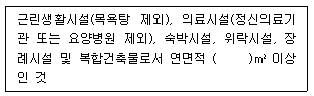
- 400
- 600
- 1000
- 3500
(정답률: 62%)
57. 화재예방, 소방시설 설치/유지 및 안전관리에 관한 법령상 형식승인을 받지 아니한 방용품을 판매하거나 판매목적으로 진열하거나 소방시설공사에 사용한 자에 대한 벌칙 기준은?
- 3년 이하의 징역 또는 3000만원 이하의 벌금
- 2년 이하의 징역 또는 1500만원 이하의 벌금
- 1년 이하의 징역 또는 1000만원 이하의 벌금
- 1년 이하의 징역 또는 500만원 이하의 벌금
(정답률: 63%)
58. 소방기본법에서 정의하는 소방대상물에 해당하지 않는 것은?
- 산림
- 차량
- 건축물
- 항해 중인 선박
(정답률: 81%)
59. 화재예방, 소방시설 설치/유지 및 안전관리에 관한 법령상 특정소방대상물의 소방시설 설치의 면제기준 중 다음 ( )안에 알맞은 것은?
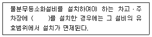
- 옥내소화전설비
- 스프링클러설비
- 간이스프링클러설비
- 청정소화약제소화설비
(정답률: 71%)
60. 위험물안전관리법령상 위험물의 유별 저장/취급의 공통기준 중 다음 ( )안에 알맞은 것은?
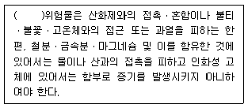
- 제1류
- 제2류
- 제3류
- 제4류
(정답률: 49%)
4과목: 소방전기시설의 구조 및 원리
61. 비상콘센트설비의 화재안전기준(NFSC 504)에 따라 하나의 전용회로에 단상교류 비상콘센트 6개를 연결하는 경우, 전선의 용량은 몇 kVA 이상이어야 하는가?
- 1.5
- 3
- 4.5
- 9
(정답률: 54%)
62. 무선통신보조설비의 화재안전기준(NFSC 5⑤)에 따라 지표면으로부터의 깊이가 몇m 이하인 경우에는 해당층에 한하여 무선통신보조설비를 설치하지 아니할 수 있는가?
- 0.5
- 1
- 1.5
- 2
(정답률: 68%)
63. 자동화재속보설비의 속보기의 성능인증 및 제품검사의 기술기준에 따른 속보기의 구조에 대한 설명으로 틀린 것은?
- 수동통화용 송수화장치를 설치하여야 한다
- 접지전극에 직류전류를 통하는 회로방식을 사용하여야 한다
- 작동 시 그 작동시간과 작동회수를 표시할 수 있는 장치를 하여야 한다
- 예비전원회로에는 단락사고 등을 방지하기 위한 퓨즈, 차단기 등과 같은 보호장치를 하여야 한다
(정답률: 67%)
64. 공기관식 차동식 분포형감지기의 기능시험을 하였더니 검출기의 접점수고치가 규정이상으로 되어 있었다. 이때 발생되는 장애로 볼 수 있는 것은?
- 작동이 늦어진다.
- 장애는 발생되지 않는다.
- 동작이 전혀 되지 않는다.
- 화재도 아닌데 작동하는 일이 있다.
(정답률: 55%)
65. 경종의 형식승인 및 제품검사의 기술기준에 따라 경종은 전원전압이 정격전압의 ± 몇%범위에서 변동하는 경우 기능에 이상이 생기지 아니하여야 하는가?
- 5
- 10
- 20
- 30
(정답률: 47%)
66. 누전경보기의 화재안전기준(NFSC 2⑤)에 따라 누전경보기의 수신부를 설치할 수 있는 장소는? (단, 해당 누전경보기에 대하여 방폭ㆍ방식ㆍ방습ㆍ방온ㆍ방진 및 정전기 차폐등의 방호조치를 하지 않은 경우이다.)
- 습도가 낮은 장소
- 온도의 변화가 급격한 장소
- 화약류를 제조하거나 저장 또는 취급하는 장소
- 부식성의 증기ㆍ가스 등이 다량으로 체류하는 장소
(정답률: 76%)
67. 자동화재탐지설비 및 시각경보장치의 화재안전기준(NFSC 203)에 따라 특정소방대상물 중 화재신호를 발신하고 그 신호를 수신 및 유효하게 제어할 수 있는 구역을 무엇이라 하는가?
- 방호구역
- 방수구역
- 경계구역
- 화재구역
(정답률: 70%)
68. 소방시설용 비상전원수전설비의 화재안전기준(NFSC 602) 용어의 정의에 따라 수용장소의 조영물(토지에 정착한 시설물 중 지붕 및 기둥 또는 벽이 있는 시설물을 말한다.)의 옆면 등에 시설하는 전선으로서 그 수용장소의 인입구에 이르는 부분의 전선은 무엇인가?
- 인입선
- 내화배선
- 열화배선
- 인입구배선
(정답률: 60%)
69. 비상콘센트설비의 성능인증 및 제품검사의 기술기준에 따른 표시등의 구조 및 기능에 대한 내용이다. 다음 ( )에 들어갈 내용으로 옳은 것은?
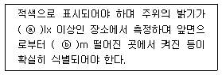
- ⓐ 100, ⓑ 1
- ⓐ 300, ⓑ 3
- ⓐ 500, ⓑ 5
- ⓐ 1000, ⓑ 10
(정답률: 59%)
70. 감시기의 형식승인 및 제품검사의 기술기준에 따라 단독경보형감지기의 일반기능에 대한 내용이다. 다음 ( )에 들어갈 내용으로 옳은 것은?
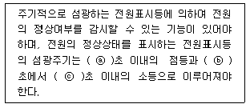
- ⓐ 1, ⓑ 15, ⓒ 60
- ⓐ 1, ⓑ 30, ⓒ 60
- ⓐ 2, ⓑ 15, ⓒ 60
- ⓐ 2, ⓑ 30, ⓒ 60
(정답률: 61%)
71. 일반적인 비상방송설비의 계통되다. 다음의 ( )에 들어갈 내용으로 옳은 것은?
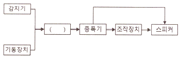
- 변류기
- 발신기
- 수신기
- 음향장치
(정답률: 66%)
72. 자동화재탐지설비 및 시각경보장치의 화재안전기준(NFSC 203)에 따라 자동화재탐지설비의 주음향장치의 설치 장소로 옳은 것은?
- 발신기의 내부
- 수신기의 내부
- 누전경보기의 내부
- 자동화재속보설비의 내부
(정답률: 56%)
73. 비상조명등의 형식승인 및 제품검사의 기술기준에 따라 비상조명등의 일반구조로 광원과 전원부를 별도로 수납하는 구조에 대한 설명으로 틀린 것은?
- 전원함은 방폭구조로 할 것
- 배선은 충분히 견고한 것을 사용 할 것
- 광원과 전원부 사이의 배선길이는 1m 이하로 할 것
- 전원함은 불연재료 또는 난연재료의 재질을 사용할 것
(정답률: 43%)
74. 누전경보기의 형식승인 및 제품검사의 기술기준에 따라 누전경보기에 사용되는 표시등의 구조 및 기능에 대한 설명으로 틀린 것은?
- 누전등이 설치된 수신부의 지구등은 적색외의 색으로도 표시할 수 있다.
- 방전등 또는 발광다이오드의 경우 전구는 2개 이상을 병렬로 접속하여야 한다
- 소켓은 접촉이 확실하여야 하며 쉽게 전구를 교체할 수 있도록 부착하여야 한다.
- 누전등 및 지구등과 쉽게 구별할 수 있도록 부착된 기타의 표시등은 적색으로도 표시할 수 있다.
(정답률: 44%)
75. 유도등의 형식승인 및 제품검사의 기술기준에 따라 영상표시소자(LED, LCD 및 PDP 등)를 이용하여 피난유도표시 형상을 영상으로 구현하는 방식은?
- 투광식
- 패널식
- 방폭형
- 방수형
(정답률: 67%)
76. 발신기의 형식승인 및 제품검사의 기술기준에 따라 발신기의 작동기능에 대한 내용이다. 다음 ( )에 들어갈 내용으로 옳은 것은?
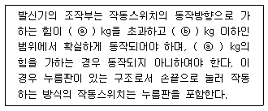
- ⓐ 2, ⓑ 8
- ⓐ 3, ⓑ 7
- ⓐ 2, ⓑ 7
- ⓐ 3, ⓑ 8
(정답률: 64%)
77. 유도등의 형식승인 및 제품검사의 기술기준에 따라 객석유도등은 바닥면 또는 디딤바닥면에서 높이 0.5m의 위치에 설치하고 그 유도등의 바로 및에서 0.3m 떨어진 위치에서의 수평조도가 몇 lx 이상이어야 하는가?
- 0.1
- 0.2
- 0.5
- 1
(정답률: 33%)
78. 무선통신보조설비의 화재안전기준(NFSC 5⑤)에 따라 무선통신보조설비의 주요구성요소가 아닌 것은?
- 증폭기
- 분배기
- 음향장치
- 누설동축케이블
(정답률: 59%)
79. 소방시설용 비상전원수전설비의 화재안전기준(NFSC 602)에 따라 일반전기사업자로부터 특별고압 또는 고압으로 수전하는 비상전원 수전설비로 큐비클형을 사용하는 경우의 시설기준으로 틀린 것은? (단, 옥내에 설치하는 경우이다.)
- 외함은 내화성능이 있는 것으로 제작 할 것
- 전용큐비클 또는 공용큐비클식으로 설치할 것
- 개구부에는 갑종방화문 또는 병종방화문을 설치할 것
- 외함은 두께 2.3mm 이상의 강판과 이와 동등 이상의 강도를 가질 것
(정답률: 58%)
80. 비상방송설비의 화재안전기준에 따른 비상방송설비의 음향장치에 대한 내용이다. 다음 ( )에 들어갈 내용으로 옳은 것은?
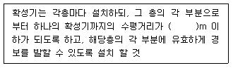
- 10
- 15
- 20
- 25
(정답률: 66%)